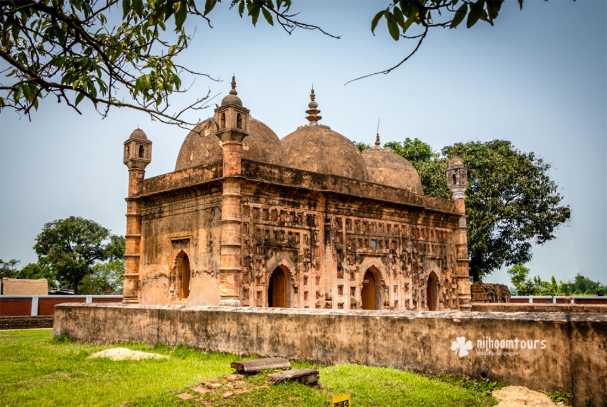

Kantajew Temple
Kantanagar Temple, commonly known as Kantaji Temple or Kantajew Temple at Kantanagar, is a Hindu temple in Dinajpur, Bangladesh. The Kantajew Temple is a religious edifice belonging to the 18th century. The temple belongs to the Hindu Kanta or Krishna and this is most popular with the Radha-Krishna devotees in Bengal

Nayabad Mosque
Nayabad Mosque or Noyabaad Mosque, is located in Nayabad village in Kaharole Upazila of Dinajpur District, Bangladesh, beside the Dhepa River. It was built in 1793 CE during the rule of Mughal ruler Shah Alam II.

Ramsagar
Ramsagar, located in the village Tajpur in Dinajpur District. It is the most-frequently visited tourist destination in Dinajpur.